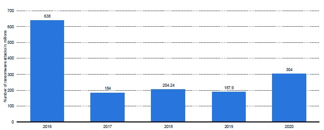

Chancen der Datenwiederherstellung

Dieses Balkendiagramm zeigt die Erfolgsquote der Wiederherstellung der Daten von Unternehmen weltweit,
die einem Ransomware-Angriff zum Opfer fielen und für die Wiederherstellung ihrer Daten das geforderte Lösegeld zahlten.
Es wird deutlich, dass nur ein verhältnismäßig geringer Anteil von 66,9 % die das geforderte Lösegeld zahlten, auch wirklich ihre Daten
erfolgreich wiederherstellen konnten. Dementsprechend verloren 33,1 % der Lösegeldzahlenden Unternehmen trotz der Zahlung ihre Daten.
Wenn wir hingegen die Unternehmen betrachten, die einem Ransomware-Angriff zum Opfer fielen und das geforderte
Lösegeld nicht zahlten, sehen wir, dass 15,5 % ihre Daten verloren haben und ein überraschend hoher Anteil von 84,5 %,
konnten ihre Daten erfolgreich wiederherstellen. Die Schlussfolgerung, die sich aus diesen Daten ergibt ist, dass nichtzahlende Unternehmen
prozentual eine höhere Erfolgsquote hatten als zahlende Unternehmen, ihre Daten wiederherzustellen.
Sie kamen den Forderungen der Angreifer nicht nach.